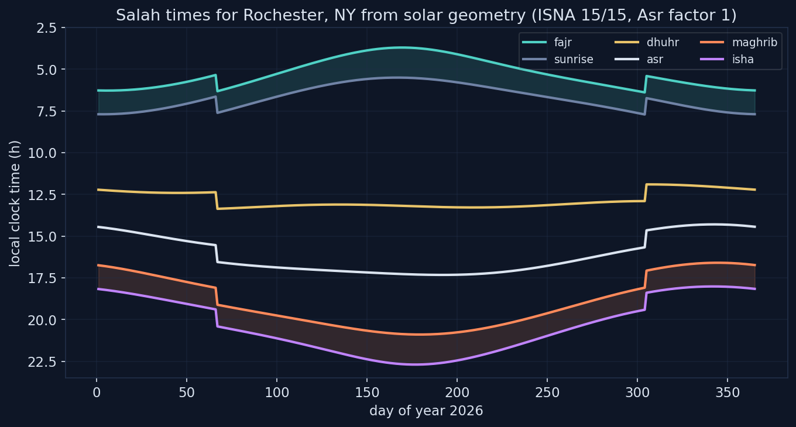
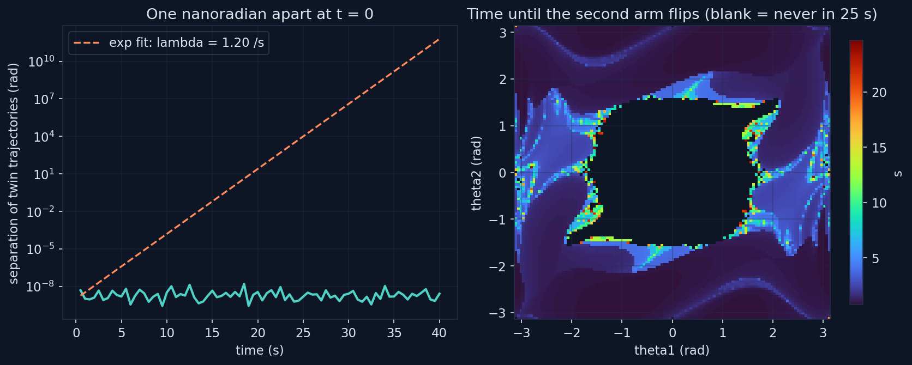
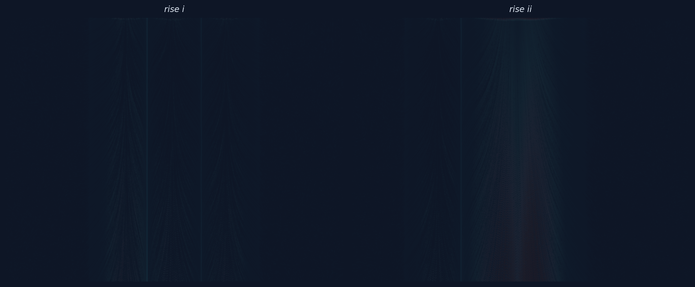

1.75e-7
ENERGY DRIFT, 40 s RK4
No client, no deadline, no citation, and the same rule anyway: every number verified, every claim checked. Three builds that exist because the questions would not leave me alone.
Prayer times are astronomy: Dhuhr is solar transit, Asr is a shadow ratio, Maghrib is sunset, Fajr and Isha are solar depression angles. This lab computes all five for Rochester from NOAA's solar position equations under the ISNA convention, and self-validates two ways: computed Dhuhr equals the equation-of-time solar noon identically, and an independent altitude evaluation at the computed Maghrib returns exactly the minus 0.833 degree refraction-corrected horizon. For July 2, 2026 it gives Maghrib at 20:54, which matches the published Rochester sunset to the minute. The year chart shows the seasons breathing, daylight-saving steps included.

Jul 2 2026: fajr 03:47, sunrise 05:35, dhuhr 13:14, asr 17:19, maghrib 20:54, isha 22:41; both self-checks exact
The double pendulum everyone has seen, plus the numbers most demos skip. A Benettin twin-trajectory measurement over 80 renormalizations puts the largest Lyapunov exponent at 1.20 per second, a 0.58 second doubling time for any uncertainty, which is why two starts one nanoradian apart disagree completely within eleven seconds. A vectorized RK4 sweep of 14,641 initial conditions maps time-to-first-flip across the angle plane, and the integrator earns trust the boring way: measured relative energy drift of 1.75e-7 over the 40 second reference run.

lambda = 1.20 /s (doubling 0.58 s); 76% of the 121x121 grid flips within 25 s; energy drift 1.75e-7 relative
Generative art with a defensible velocity field: three buoyant plumes, Gaussian updraft cores with entrainment inflow at their flanks, superposed with a divergence-free curl-noise background. Thirty thousand particles advect through it for 340 steps, their trails accumulating on the canvas and colored from deep teal in the cold far field to orange in the rising cores. Two seeds, two pieces. It is art, but the field would pass a code review, which felt like the only acceptable way for this site to make art.

30,000 particles, 340 advection steps, three plumes + curl noise; seeds 12 and 47